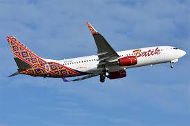

BATIK AIR

Batik Air adalah maskapai penerbangan full-service swasta Indonesia (bagian dari Lion Air Group) yang didirikan tahun 2013, menyediakan layanan premium dengan kursi lebih lebar, makanan, dan hiburan. Armada utamanya mencakup Airbus A320, A330, dan Boeing 737, melayani rute domestik serta internasional.